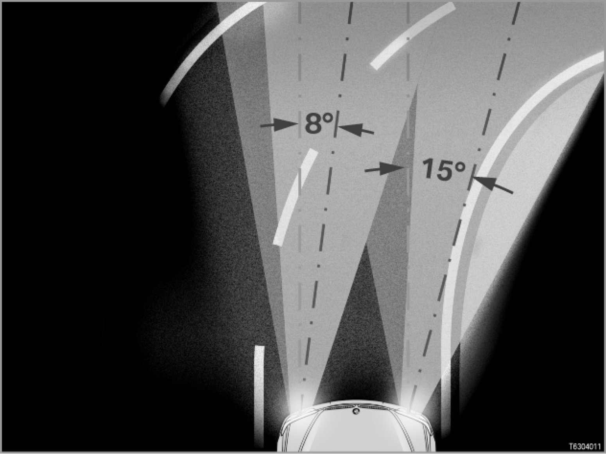

Part 1
63 03 03 (047)
Adaptive headlights
E46/2, E46/C, E53, E83

Launch dates for option 524 "Adaptive headlights":
- E46 Coupe (E46/2) and E46 Convertible (E46/C) model revision: 03/03
- E53: 04/04 onwards
- E83: From 10/03
Note: Option 524 is only available in conjunction with option 522.
Option 524 "Adaptive headlights" is only available in conjunction with option 522 "Xenon dipped and main-beam headlights".
Note: ALC = AHL
The development code for the adaptive headlights was "ALC".
ALC stood for "Adaptive Light Control".
The marketing and sales designation for option 524 in English-language markets is "adaptive headlights", abbreviated to "AHL".
This is why the abbreviation "AHL" is used even in diagnosis and technical vehicle documentation.
However, some control units may still bear the abbreviation "ALC", which may also be the abbreviation used in the EPC (Electronic Parts Catalog).
Introduction
The adaptive headlights turn the bi-xenon headlights towards the inside of a bend when cornering. This improves illumination of the curve of the road.
Visibility is therefore improved.
When cornering, the driver is not looking into a "black hole" - instead, the adaptive headlights allow the driver to see the curve of the road.
> - E46/2, E46/C, E53 and
E83 until 09/06
[system overview ...]
> - E83 from 09/06
[system overview]
Note: AHL control unit discontinued from 09/06.
On the E83 from 09/06, the software for the AHL control unit is integrated into the light module (LM). The AHL control unit is no longer fitted.
The turning lights function is new on the E83 from 09/06.
The turning lights give the area next to the carriageway additional illumination when you are turning or cornering (driving in tight bends). The function is also active when you are parking.
The turning lights are realized using the front foglights. The front foglights have a specially shaped reflector to illuminate the areas to the sides better.
Note: Turning lights only in conjunction with option 524.
Turning lights are a subfunction of option 524 "Adaptive headlights".
Brief description of components
The following components and control units provide input signals for the adaptive headlights system:
- Light switch
The rotary switch for the side lights and dipped headlights differs depending on the vehicle equipment level (adaptive headlights, automatic driving lights control, automatic or manual headlight-range adjustment). For the adaptive headlights function to operate, the light switch must be set to position "A" ("A" = "automatic driving lights control" or "adaptive headlights").
- Turn-signal/main-beam switch
The main-beam headlights are switched on and off with the direction indicator / main-beam switch (by pressing or pulling the switch). The adaptive headlights function operates with both dipped and main-beam headlights.
- Ride-height sensors
If the special equipment "Adaptive headlights" is fitted, the adaptive headlights control unit evaluates the signals from the ride-height sensors.
This is because: the adaptive headlights control unit also controls the automatic headlight-range adjustment.
The automatic headlight-range adjustment feature adjusts the vertical aim of the headlights to compensate for variations in the vehicle tilt angle (e.g. when the vehicle is laden, and under braking and acceleration in dynamic driving situations).
- Brake light switch
If the vehicle is equipped with the "adaptive headlights" option, the signals from the brake light switch are read by the control unit for the adaptive headlights.
The signal sent by the brake light switch is an input signal for the automatic headlight-range adjustment; see above: Ride-height sensors.
- Zero-position sensor
> E46/2, E46/C
> E83
The zero-position sensor in the AHL headlight sends a signal for calculating the zero position of the AHL headlight. This regulates the horizontal movement of the AHL headlight.
- Position sensor
> E53
The position sensor in the positioner module for the bi-xenon headlights supplies a signal for the horizontal movement of the headlights.
- General module
The basic module supplies input signals with regard to the terminal management (terminal 15 ON).
The adaptive headlights control unit is activated when terminal 15 is switched ON.
- EGS control unit or reversing light switch
When reverse gear is engaged, the headlights are moved to the straight-ahead position.
On vehicles with automatic transmission, the EGS control unit (electronic transmission control) provides the "Reverse gear engaged" signal.
On vehicles with manual transmission, the signal is supplied by the reversing light switch.
- KOMBI: Instrument cluster
The instrument cluster is the gateway, i.e. the data interface) between the PT-CAN data bus and the K-bus.
- RLS: Rain-light sensor for automatic driving lights control
The rain-light sensor measures the ambient brightness outside the vehicle.
- In twilight conditions, the rain-light sensor transmits the message "Twilight" so that the automatic headlight-range adjustment can activate dipped headlights. The headlights are tilted up and down as required, but they are not swivelled towards the bend in the road.
- In darkness, the rain-light sensor sends the message "Darkness". The adaptive headlights are then activated when the vehicle is cornering. The headlights are moved to the left or the right:
- Steering-angle sensor and DSC sensor
The steering angle sensor and DSC sensor (DSC = Dynamic Stability Control) supply signals for the adaptive headlights to the adaptive headlights control unit. These signals are evaluated as follows, depending on the vehicle's speed:
- Vehicle speeds up to 30 km/h:
The adaptive headlights function is controlled using the information from the steering angle sensor (in the steering column switch cluster).
- Vehicle speeds between 30 km/h and 50 km/h:
In the 30 to 50 km/h speed range, there is a continuous transition in signal evaluation: from the evaluation of signals sent by the steering angle sensor to evaluation of the signals sent by the yaw-rate sensor (in the DSC sensor).
- In extreme dynamic driving situations, e.g. if the vehicle starts to skid or fishtail, even at speeds less than 50 km/h, the signals from the yaw-rate-sensor are considered.
If the vehicle starts to skid or fishtail, the headlights will move to the straight-ahead position. The headlights are not moved until the vehicle has stabilized.
- Vehicle speeds over 50 km/h:
At speeds upwards of 50 km/h, the signals from the yaw-rate sensor (in the DSC sensor) form the primary basis for control of the adaptive headlights function.
Reason: For a constant cornering radius, the steering angle required increases disproportionately with speed. In addition, the steering angle required also depends on the coefficient of friction of the road surface.
The yaw rate is directly proportional to speed. For this reason, the yaw rate is always the most suitable measure for controlling the adaptive headlights at high speeds.
Even at high speeds, however, the steering angle sensor signal is used to detect (predict) the driver's commands in advance. This prediction is important: The yaw rate signal is not supplied until the vehicle has responded to the steering wheel movement.
The steering-angle sensor signal is disabled so that rapid, momentary steering adjustments do not affect the adaptive headlights function.
A number of control units are involved in the adaptive headlights system (see above: GM, EGS, KOMBI).
Depending on the series and model concerned, the adaptive headlights are actuated by the following control units:
- AHL control unit
> E46/2, E46/C, E53 and E83 until 09/06
The AHL control unit controls the adaptive headlights.
For safety reasons, the AHL control unit is also responsible for the automatic headlight-range adjustment. This is because: Oncoming traffic must not be dazzled by the adaptive headlights. If a headlight sticks in an unfavorable position, the AHL control unit will attempt to move this headlight down (using the stepper motors in the automatic headlight-range adjustment).
The AHL control unit is connected to the K-bus and the PT-CAN.
- LM: Light module
> E83 from 09/06
The AHL control unit is integrated in the light module.
The light module controls and monitors all vehicle lights. Information is received and transmitted over the data buses PT-CAN, LIN bus and K-bus.
- Stepper motor controllers
The stepper motor controllers (SMC) control the stepper motors in the headlights (for the automatic headlight-range adjustment and for the adaptive headlights).
- LSZ: Light switch cluster
> E46/2, E46/C, E53 and E83 until 09/06 (E53: light module)
The light switch cluster forwards the prompts from the light switch and from the turn-signal/main-beam switch to the AHL control unit (via the K-bus).
- Xenon-headlight control unit
The xenon-headlight control unit actuates the bulb in the bi-xenon headlights.
The following components are controlled:
- Stepper motors for the adaptive headlights
The stepper motors turn the positioner modules in the bi-xenon headlights.
The stepper motors swivel the headlights along the vertical and horizontal axes. (vertical = up and down for the automatic headlight-range adjustment;
horizontal = to the left and right for the adaptive headlights).
The positioner modules execute the movement.
- Indicator light on the light switch
The indicator light (green LED) next to the "A" (= "automatic driving lights control") is actuated by the adaptive headlights and has 2 display functions:�
- The indicator light lights up permanently when the automatic driving lights control or adaptive headlights function is switched on (= light switch in position "A").
- The indicator light flashes if a fault develops in the adaptive headlight system.
The indicator light thus supports diagnosis of the adaptive headlights.
The indicator light is actuated by the light switch cluster or by the light module.
System functions
The adaptive headlights system moves headlights horizontal (i.e. from left to right) in order to illuminate the inside of a bend when cornering.
The following functions of the adaptive headlights system are described below:
- System activation and automatic calibration
- Activation of stepper motor controllers
- Speed-dependent analysis of signals
- Adjustment of headlight horizontal aim
- Deactivation of adaptive headlights function under extreme handling conditions
- Deactivation of adaptive headlights function in response to system faults
- Setting headlights to parked position
- Automatic headlight-range adjustment
- Adaptive headlights for automatic driving lights control
- Turning light
Note: Different control units for adaptive headlights.
> - E46/2, E46/C, E53 and E83 until 09/06: AHL control unit
> - E83 from 09/06: The adaptive headlights are actuated by the light module.
For this reason, the following text refers to the general "control unit for adaptive headlights".